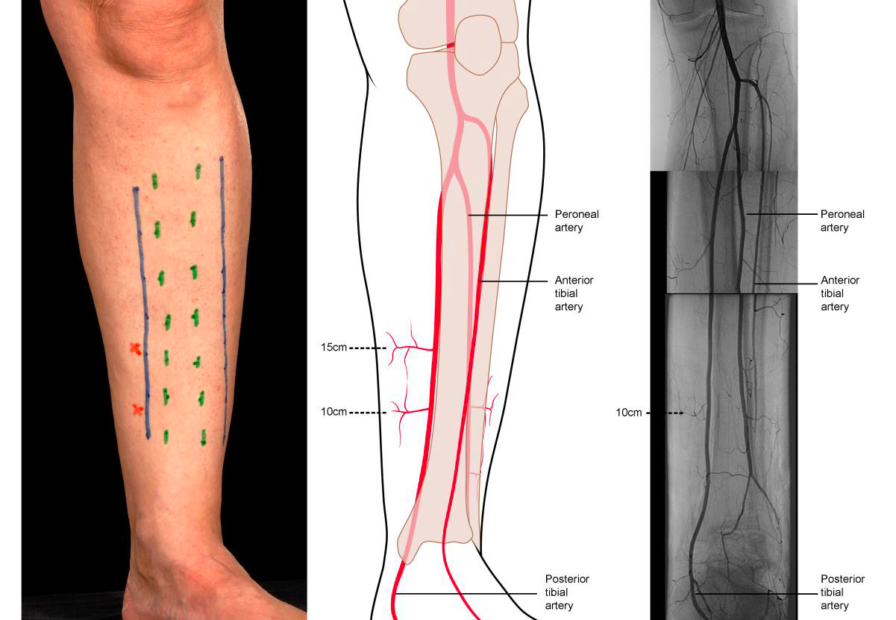
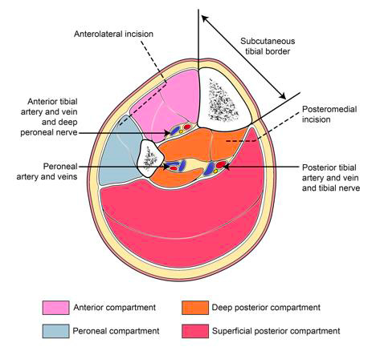

A collaboration guide for the Jamaica orthoplastic
team. When an open fracture may need soft-tissue coverage, flag
plastics (Dr. Barrera) early so we plan reconstruction together. This
complements — it does not replace — orthopedic trauma management.
1. When to flag plastics
Open fracture that won’t close primarily — soft-tissue loss,
degloving, or exposed bone, hardware, joint, tendon, or neurovascular
structures
Gustilo IIIB (needs a flap) or
IIIC (vascular injury)
Segmental, high-energy, or mangled extremity
When in doubt, flag early — at first
identification, before debridement. (Polytrauma/ATLS priorities first —
“life over limb.”)
2. How to flag
Text a wound photo + one line: mechanism, bone,
Gustilo grade, perfusion (well-perfused vs. diminished/asymmetric)
3. Photography
Photograph at first exposure, before debridement, and again
after debridement/fixation
Remove gross contamination only; follow department policy; keep
images in the record
4. Initial
management (reference — per BOAST-4 / AAOS)
Antibiotics — within 1 h
Type I/II: cefazolin
Type III: add piperacillin-tazobactam (Zosyn)
Soil / farm / crush: add high-dose penicillin
Penicillin allergy: clindamycin + a gram-negative agent
Plus tetanus prophylaxis
ER
Control hemorrhage
Remove gross debris only — no aggressive ER irrigation
Splint
Debridement
Radical, to healthy bleeding tissue, within ~12 h
Copious saline (high- vs low-pressure equal — FLOW)
Antibiotic beads / NPWT to bridge to coverage
Imaging
Plain films + CT
Hard signs (pulseless limb, expanding hematoma) → OR, not
imaging
IIIB/IIIC: CTA after provisional fixation —
reduction clarifies perfusion and maps flap recipient vessels
Cultures low-yield
Pre-op flap labs
CBC, BMP, LFTs, coags (PT/INR, PTT)
HbA1c, pre-albumin
5. Incision & fasciotomy
planning
Medial and lateral fasciotomy incisions facilitate recipient-vessel
access during free-flap coverage — these incisions can be
planned together.
Medial (posteromedial) incision — preserves the
posterior tibial perforators (local fasciocutaneous flaps) and gives
access to the posterior tibial vessels as free-flap recipients.
Lateral (anterolateral) incision — decompresses the
anterior and peroneal compartments.

Wound-extension and fasciotomy incisions
of the leg: subcutaneous tibial border (green), access incisions (blue),
posterior tibial perforators (red), with arteriogram. Adapted from
BOA/BAPRAS, Standards for the Management of Open
Fractures.

Leg cross-section: posteromedial and
anterolateral incisions to decompress all four compartments. Adapted
from BOA/BAPRAS, Standards for the Management of Open
Fractures.
6. Timing targets & why
early matters
Debridement within ~12 h
Soft-tissue coverage within 48 h of definitive
fixation (SPARTA)
Definitive fixation + coverage within 7–10 days of
injury (extended Godina window)
Fix-and-flap in one sitting where feasible; a
planned day-1 fixation / day-2 flap is a safe alternative to after-hours
microsurgery
BOAST-4–compliant early fixation and coverage: deep-infection
rate ~2% vs. 16% with delayed care (D’Cunha, 12-year
review)
Orthoplastic approach: ~60% reduction in wound
infection and osteomyelitis vs. traditional sequential care (Klifto
meta-analysis)
Gustilo–Anderson
classification
Type
Wound / energy
Soft tissue
Coverage
I
< 1 cm, clean
Minimal
Local
II
1–10 cm
Moderate
Local
IIIA
> 10 cm / high-energy
Adequate despite injury
Usually local
IIIB
High-energy
Inadequate — needs flap
Flag plastics
IIIC
Any
Arterial injury needing repair
Flag plastics + vascular
OTA Open Fracture
Classification (OTA-OFC)
Grades five components 1–3; higher grades carry higher risk and more
often need orthoplastic coverage.
Component
1
2
3
Skin
No major degloving
Limited degloving
Extensive degloving
Muscle
Intact function
Loss but functional, focal necrosis
Dead/nonfunctional, compartment loss
Arterial
No injury
Injury without distal ischemia
Injury with distal ischemia
Contamination
None/minimal
Surface, removable
Embedded or high-risk (barnyard, water, feces)
Bone loss
None
Some contact retained
Segmental loss
Interpretation: a grade of 3 in any
category marks a high-risk limb — muscle 3, arterial 3 (distal
ischemia), or bone 3 (segmental loss) correlate with higher rates of
amputation, infection, and the need for flap coverage. Grade 1 across
categories generally behaves like a low-energy open fracture.